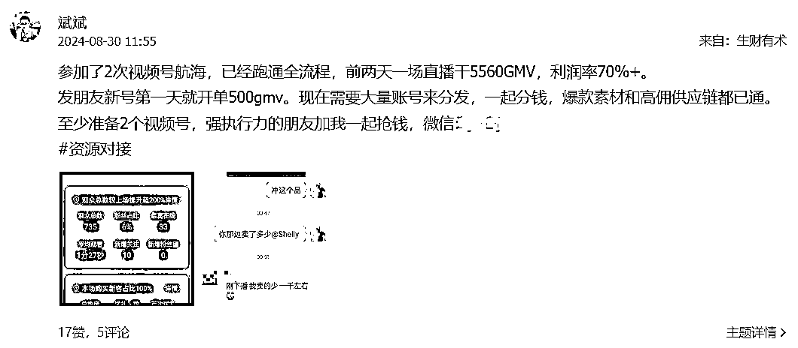

免费带领百名圈友做视频号数字人带货，变现率30%+，一个月GMV近10万，发放佣金5万+
来源：https://zqqtm0kx8fq.feishu.cn/docx/T9Qed2xGOo6BKtxfz7nc5GlSnSf
老规矩，先说真实数据，方便圈友参考：一个月时间，带领百名圈友做视频号数字人带货，一个月GMV近10万，累计佣金5万+，整体变现率30%+。2人收入破万，10人以上收入数千元，其他变现的同学几十元到几百元不等。
虽然说数据并不亮眼，重要的是真实并且持续增长，希望圈友能够从本文收获点东西，而不是白白浪费了阅读时间。
已分目录，大家可以挑选感兴趣的部分阅读：
一、自我介绍
大家好，我叫斌斌，2024年4月加入生财，加入生财至今累计变现10万左右利润。
和众多大佬比起来很微小，但是我已经好几年没有赚过副业钱了，尝试了很多，失败了很多，似乎前几年都陷入了0-1的魔咒。
在生财的这几个月我有肉眼可见的成长，我在一步一个脚印的往前走，相信自己会越来越强。
前面六七万主要是靠公众号爆文赚的，感兴趣的朋友可以看之前我写的精华帖：
标题：公众号爆文项目，50篇文章11篇10万+，一个月收入2.2万+:https://t.zsxq.com/8yADo
后面的主要就是视频号，今天的主题也是视频号。
二、为什么我会入局视频号
其实，我早在2019年就拍过视频号和抖音号，我当时对自己的营销和文案能力过于自信，不加入任何圈子，也鄙视那些搞抄袭搞伪原创的人，像是穷书生的傲慢，长时间没有正反馈，结果自然以失败告终。
报名生财后，第一个航海就是5月份的视频号口播航海，我其实根本没拍几条，因为当时我在外地出长差，并且每天怼3篇公众号爆文，分身乏术，但是，这种情况下我的视频号竟然还变现了100块，并且看到有一个群的小伙伴短短几天变现几千几万块。
我立刻意识到这是一个巨大的红利，决定投入更多时间、精力去做，但是航海结束了，没有对标素材更新了。
开始自己找，但是太费时间了，视频号像是信息孤岛，没有三方平台能够批量查询爆款素材，并且选品中心的佣金其实很低，我需要解决这个问题。
于是以视频号为关键词，在生财开始搜索帖子并且遍历阅读，我看看其他圈友是怎么解决这个问题的，并且看有没有做视频号的成功经验，如果2个甚至多个圈友交叉提到同一个方法，我就会格外重视，因为确定性更高了。
最后选择报名了一个大佬的数字人视频号训练营，避免广告嫌疑就不公开说了，解决了爆款素材的问题，每天更新，同时也解决了高佣供应链问题。
带给我的反思就是：要做什么事，就进入做这个事的圈子。要赚钱，就进生财有术这个圈子。要做视频号，就进入一个靠谱的视频号圈子，因为你遇到的困难，要踩的坑，前人基本都遇到过了。并且抱团的力量非常强大，你以为的爆款素材是最近一周的？其实，我们只打直播广场上正在大爆的。
三、项目核心逻辑
用视频号直播广场上正在大爆的素材，文案驱动数字人生成新的视频，进行混剪去重以后成为新作品发布，短视频爆了以后开直播挂车收单。
- 为什么用广场上正在大爆的素材？因为爆过的内容还会再爆，正在爆的内容爆率更大。
- 为什么不短视频直接挂车？因为这样系统会考察转化率，流量很难打。
- 打的什么市场？老年人市场，720P画质甚至480P画质都够用了，老年人有钱有闲还不抠画面细节，客单价直接干到拼多多的两三倍，利润自然也是三倍了。
- 数字人和真人的优劣？真人口播需要表现力，非一朝一夕之功，并且不一定符合所有文案商品的气质，但是长期主义。数字人千百种，任你挑选，表现力的问题在这直接被SOP标准化了，缺点是复利低微。
- 直播要求高吗？直接读稿，视频号直播黑话：只要短视频爆了，直播间栓条狗也能出单。
四、为什么发起百人共创计划
开始干数字人视频号带货后，我准备了5个号，每个号一天干6条，中途陆续出点小单，大干视频号2周后，我开始爆了，一个视频素材打了1万GMV，记得当时产品是急救毯，利润率72%，赚7000元，也就是那两三个小时直播的事。
并且，当时我还找了朋友的号一起分发，他的号也爆了，从没干过副业项目的他，竟然在我的引导下，直播一小时也干了1000多GMV，虽然播的很烂，但是数据喜人，毕竟视频号直播只不过是收银员作用。
这个时候我就想，为什么不多找一些朋友创作分发放大呢？
原因：
- 第一，一张身份证只能实名2个视频号，搞很多号有点麻烦。
- 第二，视频号容易违规，虽然不是抠像去重连怼的废号流打法，但是还是很容易暂停推荐。
- 第三，视频号可以一拖五发布同一个视频，只要授权就不会限流，一个素材没发布6个视频号就是浪费。
- 第四，用数字人不需要主播表现力，完全标准SOP操作，全流程环节没有特别的能力门槛，没有放大瓶颈。
于是，共创计划就从这张图开始诞生了：

共创计划内容：3个人6个号为一组，互相创作视频，授权后进行一拖五分发，将素材和账号的价值最大化。
复利举例：一个人一天做2条视频，发布在自己的2个账号就是4个作品，3个人每人创作2条，6条作品6个号就是36条作品，每个人都没有在创作视频上多付出精力，但是每天的作品数量翻了9倍，爆的概率就翻了9倍，剩下的就是狠狠执行、大家怎么分钱的事。
五、短视频爆款变量分析
相信不少朋友已经发现，视频号数字人带货的核心要素就是：短视频要爆。
那么问题来了，如何让短视频爆的概率提高？爆款的变量到底有哪些？又该如何控制和提高？
下面这些要素是整个共创团队共同实践总结的结果，再次感谢大家：
视频号本身
- 新号有流量扶持期，作品容易跑出来，不过违规抗风险能力低，一般养三四天号再开干，真人口播是平台极其鼓励，可以快速提权重的方式。
- 老号：权重高就不容易违规；与粉丝数、是否垂直赛道都有关系，抗风险违规能力强。
- 多准备一些账号，账号是消耗品，一组6个号随时补位，不让素材丝毫浪费。
- 用账号数量对抗概率，有的号天生残疾，有的号是天选之号。有些小伙伴做三四个号好几天死活不出单，又搞了2个号突然就行了。
短视频作品
开头黄金三秒：
- 非常重要。爆款开头可以反复利用，是用户停留推流的重要数据指标。抖音、小红书、视频号所有视频相关的地方都可以去收集积累，形成爆款开头素材库。
数字人/真人
- 人物是否符合文案的气质，是否有可信度和说服力、吸引力；
- 中老年男人形象普遍流量好一点；短视频认脸，脸+素材火了就可以不停衍生更多短视频；
- 真人口播可以不停的产出素材，永远是原创，一模一样的文案重录一遍也是新素材，并且长期主义；
- 人物服装很重要，厨师服、劳保服，不用你介绍身份对方自动得出身份结论，你嘴里说的别人不一定信，但是别人自己得出的结论却是深信不疑。
流量文案部分
- 像是有些文案看起来前面废话很多一直不进入正题，其实就是在拉时长拉完播，用户想知道后面到底是什么
- 流量文案和带货部分也可以灵活拼接组合，例如今天爆的素材把流量文案部分拆出来，拼接转化率高的商品卖货素材如急救毯去卖。
带货文案部分
- 直接影响转化，看塑品片段有没有吸引力，包括文案和画面
- 短视频可以各种混剪特效增加吸引力和提高转化，直播只能口播，塑品空间非常有限。所以如果是你直播推流的用户可以引导看短视频再来直播间下单
- 价格低，引导进入橱窗商品详情页，有些商品SKU自带升单属性，如5块钱1个，10块钱3个。
- 限量促销等营销手段，如果打开链接看不到了，就说明活动已经结束了，趁着还有库存，抓紧带回去试试。
场景
- 厨房卖调味料、园林花园卖种子，演播厅讲新闻（容易资质违规，仅举例），画面中的每一个像素每一个细节其实都会对观众产生捕风捉影式的影响。
对策
- 尽量比原素材做的更好更有吸引力，就多了一分赢面，不知道如何做的更好就像素级模仿
时机
- 每个号每个时期的初始流量人群不同，很容易推流不精准死在乱军当中，在初始流量池就直接嘎了。
- 多铺号，数量对抗概率，一拖五一定要全部发出去，基础流量越多，推流稍微精准点的号就容易跑出来，一将功成万骨枯，这是千军万马过独木桥。
- 爆款素材出来后第一时间去跟，人群很快就会被各大团队清洗一遍，跟的慢就没流量和转化了
为方便查阅，以上变量做成导图了：
六、近70%的人为什么没变现
上文我提到变现率大概30%+，那其实还有靠近70%的人没有变现。
当然，很多人没变现其实也有了很好的数据反馈，例如播放量达到了之前都没有的数量等等。
但是为什么这么多人没有变现，我无数次深深的思考这个问题，原因到底在哪里？
有结果的人八仙过海各显神通，没结果的人却是一些通病：
1、没有快速的正反馈
- 我观察了下，坚持下来的人，大部分都是短期快速拿到正反馈的。最好的方式当然是大家都短期拿到正反馈，但是这又怎么可能呢？
- 看了很多大佬说不要把数据和变现当正反馈，把认知提高和成长当正反馈，我试了，但是我发现我这种血肉之躯根本还是无法坚持，我就是要数据，就是要变现，其他的似乎都无法进行有效激励。
- 所以我的所有行动都在帮助大家真正拿到市场的正反馈，例如把验证了数据好的素材进行强调给大家进行分发；带货视频数据不行就先把其中的流量素材部分拆分出来进行发布；制作流量素材库给大家口播或者用数字人进行口播；素材分成即使是一两块钱也要快速转到创作者手里；哪怕只是开通了原创功能也是一个里程碑...
- 我所有努力都是在帮团队一个又一个个体拿到市场的正反馈，因为这是血肉之躯坚持真正的源动力，正反馈设置的步子大了就不停的二次细分和切割，直至小到你只需要点一下发布视频，只要有你的参与，哪怕环节和动作再小，都是激动人心有意义的。
- 有一位小伙伴的话我印象很深刻也很感动：我的视频破一千播放了，我以前拍很多从来没有破过1千，我知道这个成绩对你们来说很正常不算什么，但是真的对我鼓励很大。
2、问题思维
- 有些人是问题思维，提出问题和困难然后心安理得的放弃，且理由充分。还有些人是方案思维，只会想着如何解决问题，解决问题了不断前进才有可能完成一个项目的闭环进行变现。
- 例如A：我两个账号都停止推荐了，没办法做了。B：那就去弄更多账号呀，我以前做抖音也是找亲戚朋友弄了很多账号。A：你以为别人会帮你呀，现在的人可自私了...
- 满脑子问题，一个问题衍生出另一个问题，却从不想办法解决问题，这就是很多人的现状，就拿上方举例，别人怎么可能无缘无故帮你呢？但是用爸妈兄弟姐妹的实名行不行？朋友的账号进行分润买些东西给他行不行？关键是是否有解决问题的思维？
- 还有些人喜欢预设困难，如果违规了怎么办？如果没有结果怎么办？如果侵权惹官司了怎么办？...
- 问题思维，害人不浅，不要老想着问题，而是聚焦在如何解决问题。
3、预期不符实际
- 老话讲三年入行，十年称王。开实体店不会指望一个月回本，打工入职都要3-6个月试用期才开始创造正价值，为什么到了做副业做项目上却指望几天呢？其实就是对项目的预期有点不符实际。
- 大部分人的持久力其实保持不了一个月，不是钟点工不是打工，怎么可能一做就有结果呢？如果你只有三分钟热度，就需要三分钟结束战斗，否则等待的就是心力受损、执行力不足，然后放弃。
- 调整好对项目的合理预期很重要，能很大程度保护心力受损，否则就会陷入反复内耗和自我怀疑之中。给自己定一个期限：每天投入多少时间，坚持多少天，然后再问结果，这很重要。
- 还有些人连续好几天出单甚至爆单，遇到两天不出单就开始焦虑，也是不合理预期。毕竟在短视频领域：不爆是常态，爆单是变态。
4、没有基础执行量
- 有的小伙伴在不停的寻找捷径，却没有脚踏实地的基础执行量，看见广场上一个视频爆了就问这个是怎么做到的？或者想入非非我从抖音搬运会不会好点？群里的素材用的人太多了我要自己创作...不按目前验证有效的方法执行，也不去验证测试自己的想法，就空想。投机者日复一日的在寻找捷径，有结果的人都在日拱一卒。
- 以前我觉得坚持、持久是成功者的谎言和借口，他们不想告诉我们秘诀和捷径，就编织了这么个借口来托辞和敷衍，奇怪的是几乎所有的成功者都喜欢用这个借口，自己做项目带项目了才发现这是朴素真实的道理。
- 先做100条视频再说，很简单朴素的道理：做了才能有结果，任何项目，需要有基础的执行量，否则成了也是运气，不具备可持续性的结果反而容易蒙蔽双眼。
- 基础执行量的0-1路上太需要互相鼓励了，因为我们是迷茫的看不清前方的，黑黝黝的一片，恐惧、害怕、无助、无力。李超鹏老师的寄语深深刻在我的脑子里了，希望也能给你力量：“我带出来的几乎所有的口播IP，不乏现在月销几百万的大佬，成功之前都深深的怀疑自己不适合这条路，无一例外。”
5、没有复盘优化
- 有些人有基础执行量了，还是没结果，就是因为没有复盘优化。我在群里说每做十几二十条视频没出单可以找我一起复盘优化下，结果没出单的人一大把，找我聊的人不超过5个。
6、没大量测试
- 有的人就自己两个号发发，也不让小伙伴一拖五分发，一天也做不了2条，有正反馈才是一件奇怪的事。
- 大量铺号，每天大量做素材拉满分发，一天不超过10条都会推流，大量测号测素材，没有魔法，都是物理攻击。
7、不信充满质疑
- 有的小伙伴充满质疑，我说用A方法有效，她问B方法行不行，过了2天又问C方法行不行，然后又问DEF方法行不行。先抄再超，抄作业还没做好，又谈什么创新创造呢？
- 还有的小伙伴和我互怼，好像我在忽悠TA一样，总希望我能随时跟TA证明承诺些什么？给TA解决所有的问题，不然就是我在骗人忽悠人，例如到底啥时能变现变现多少钱？我没电脑进行剪辑怎么办？即创卡了怎么办，这平台到底行不行？我去哪搞那么多账号？...
- 狠狠相信有结果的人，因为结果不会骗人。由于多方条件资源限制，例如认知高度和项目的深入程度不够，很容易做出错误的判断和决策，就像有些时候你感觉一个项目混混沌沌的，一会觉得能赚钱，一会又觉得不行，反反复复、纠结、忐忑、迷茫。这个时候就找一个有结果值得信任的人，狠狠信他，听话照做就够了。
8、忙、没时间
- 有些人上班996，确实没有时间和心力做别的，没办法，不能什么都想要，老天是公平的，尤其是给每个人的时间。
- 忙，是因为觉得有更重要的事，更重要的项目。换句话说，忙，是因为觉得这件事不重要。为什么视频号航海几乎100%上岸率，因为不打卡2000块就没了，能变现最好，不然拿回2000保证金也是很重要的事。
9、真的不适合
- 没电脑，岁数大了不会用电脑，剪辑很费劲根本无法进行...这些人基本在加入阶段我就拒绝了，只是难免有漏网之鱼。
- 网感极差。商品不挂橱窗哼哧哼哧带货的；带货视频不引导橱窗下单的；做出来的视频有噪音前言不搭后语的...没办法，没有一个项目适合所有人，也没有一个人适合所有的项目。
七、共创计划执行过程的得与失
关于SOP
- 小伙伴加了我以后，会看一篇项目介绍文章，感兴趣的问一两个疑问基本就加入了，看不懂纠结的我都建议看看别的项目，因为难出结果
- 然后会发我录制的一个视频教程和账号准备教程，完成了第一条合格视频制作才会看到后面的教程。（因为我发现信息越多，干扰越大，只会影响拔刀的速度，最好的办法就是给执行手册，一二三四完成了符合要求了再看五六七八）
- 完成了第一条合格视频制作会发启航手册和小组分配，进行学习和小组群打卡。（启航手册实时更新，随时我发现什么坑或者什么好的方法都会补充进去）
我的日常
- 每天在群里加油打气，发转账截图、发爆款数据截图、发激励人心的朴素道理、发队友们有价值的打卡内容。这些内容波浪式的推着一批又一批队友前进，我太知道0-1路上的迷茫、挣扎、痛苦，不停游走在放弃的边缘，因为我经历了无数次。
- 研究思考复盘测试，提高爆款率，结果才是硬道理，我作为发起人必须排除万难，敢为人先。
- 24小时动态发送爆款素材，短视频的爆款素材永远是第一驱动力。
关于流量来源
- 这几个月做公众号流量主，我的公众号从100粉积累到了1万多粉，是半IP半职场话题型的，有一部分粉丝应该算是精准人群。
- 我有5000多人之前做营销的私域（事实证明只是有对方微信而已，没加入几个人）
- 生财的小伙伴。大概团队80%以上都是生财的小伙伴，当时发了视频号数字人的风向标中标和资源对接模块信息，不少小伙伴看到后联系我了。
关于营销转化
- 我发现很多小伙伴的问题几乎一样，就那么几个，于是我写了一篇文章介绍项目，效率大大提高了，感叹一句：文字的复利真的是无穷大，可以打败时间。
- 这个项目我从不去说服人，只筛选人，因为这套SOP外面都卖一两千甚至大几千，现在免费都意识不到价值的人，不是我想找的。生财新人课中学到：认知差。很多人知道了信息差但是没行动就是因为看不懂看不清，没有解析出项目价值，没必要多说，况且我也没有收培训费，浪费时间就是谋财害命。
打卡内容与奖惩
●每天在3人小组群内打卡，打卡内容：打卡日期、今日创作视频数量、今日踩坑或收获
●只要过了原创，都算创作视频数量，有时候数字人比较难过原创可以口播一条或者发布流量视频也可以
●组内成员已过原创的视频一定要第一时间发布，为方便大家，可以把商品链接一起发一下
●打卡奖惩
○对于产能高的小伙伴，会不定期重新成组，强强结合，例如A一般每天发2-3条，B每天只发1条，有时候还不发，那么会把A类人聚集在一个小组
○创作20条原创视频或者GMV200元，可以申请进入高手群，进行更高阶的打法和资源分享
○没有创作视频的当天需要在3人小组群内发红包（20元包3个），连续2天没有创作进行劝退，相互监督。
○原创视频跟发互相提醒监督，视频已经做好了，发出去就行了，少发一个就少一次爆的机会
是否要收费
- 一开始是完全免费的，但是我发现90%的人都没动，我还花了很多时间交流解释项目细节，浪费双方时间。
- 后来我就从生财航海得到启发，收取200元保证金，打卡21天返还，大家的行动力大大提升。
- 并且我还优化了一下：做出第一条合格视频就返还100元，印象中几乎100%的人都做到了。有圈友说，像升级打怪，感觉很不错。
- 但是后面的21天打卡70%的人都没做到，比起损失100块，做21条视频可能更痛苦，如果变成2000块的保证金，我想结果可能就大不一样了。
如何分钱
- 利润/销售额基本都是60%-70%的区间，共创计划成员的分润是按利润的百分比来分，账号拥有者（自己直播或者自费代播）50%，素材创作者30%，我20%
- 后来经过一位组员启发，设置了阶梯式奖励，每打1万GMV提升利润的5个点，最高利润的95个点，这位组员差不多2万GMV了。
- 实践发现一个3人共创小组，要么一起起来了，要么一起放弃了，或许这就是团队的意义。
八、写在最后
感谢生财这么好的平台和各位给我力量的圈友，我的赚钱认知、项目、团队，都是从这边获得的。
在公域做交流和链接，我会担心对方是不是骗我，信任成本很高，在生财，我很放心。
矫情的话不多说，接下来也会贯彻生财教我的哲学：极致利他。多总结分享干货，我想就是对生财最好的回馈。
欢迎各位大佬和我链接交流，大家一起生财有术。